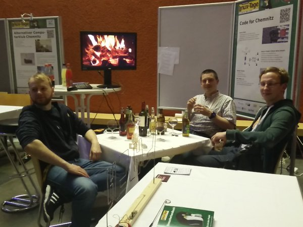

@codeForChemnitz
Morris - Tobias - Philipp
Ronny - Stefan - Benedikt
Webentwickler
Open-{Source|Data|...}-Enthusiasten
Allzeitweltverbesserer
Was ist Code for Germany?
Geschichte
/ Frühjahr 2014 Gründung
/ Regelmäßige Treffen
/ Chaos Communication Camp & Chemnitzer Linux-Tage

Gesellige Lagerfeuerstimmung bei den #CLT2016
Unsere Ziele
/ Mitstreiter begeistern
/ offene Daten finden
/ gemeinsam Projekte umsetzen
/ mehr Daten in Chemnitz öffnen *sigh*
Offene Daten und Chemnitz
schwer zu finden
Lizenz unklar
Transparenzgesetz
geschlossene Formate
Excel-Dokumente
veröffentliche Daten
keine offizielle Schnittstelle
Offene Daten in Chemnitz
Geoinformationsportal
Datenhoheit
Pressemitteilung
verstreut
Korrektheit?
eins
chemnitz.de
\o/
GIS-Portal is coming!
Vielen Dank und kommt mal vorbei!
@codeForChemnitz
codeforchemnitz@lists.okfn.org
codeforchemnitz.de